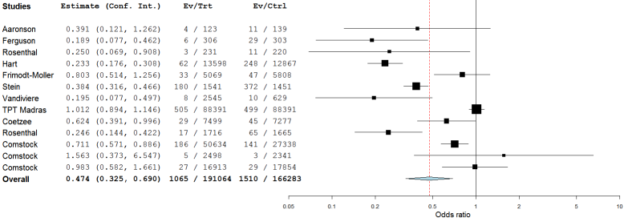
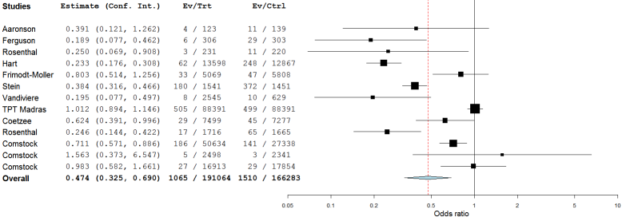

Note: If you select one-arm, only the first two data columns (Tx An and Tx AN) are included in the analysis. The Tx Bn and Tx BN columns are shaded grey.
When you select a metric, the effect sizes and confidence intervals are immediately updated.
This section presents an example of performing a meta-analysis using Open Meta-Analyst.
Open Meta-Analyst displays the data shown below.

To perform a meta-analysis on the data, select meta-analysis from the Analysis menu. This opens the Methods & Parameters dialog, as shown below.

You can select a method for the analysis in the analysis method field. The default method is Binary Random, which uses the DerSimonian-Laird method to fit a random-effects model. The other options in the dialog are described in Analysis Options.
Click OK to perform the analysis. The results are displayed in the results/analysis window.
The results of the meta-analyis consist of two parts:
 

In the example above, the meta-analysis calculations are performed in logarithmic scale, so the model results are displayed in standard and log scale. When calculations are performed in standary scale - for example, when the metric is risk difference - only one table is displayed.
The forest plot shows the effect sizes and confidence intervals for each individual study, as well as the overall results. The plot also displays the raw data for the studies and the overall results in three columns:
By default, the metric for the effect size is set to odds ratio (OR). To change the metric:
Note: If you select one-arm, only the first two data columns (Tx An and Tx AN) are included in the analysis. The Tx Bn and Tx BN columns are shaded grey.
When you select a metric, the effect sizes and confidence intervals are immediately updated.